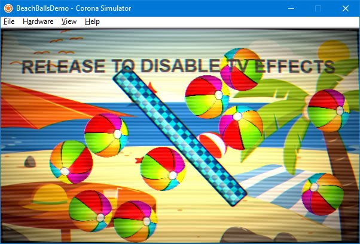
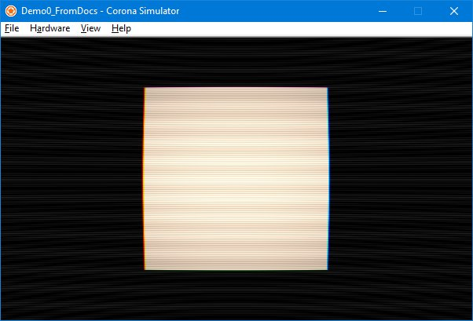
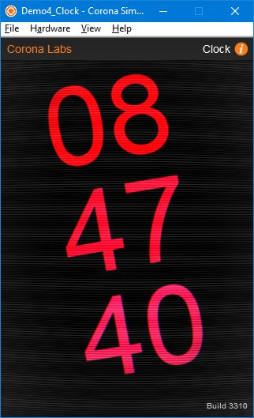
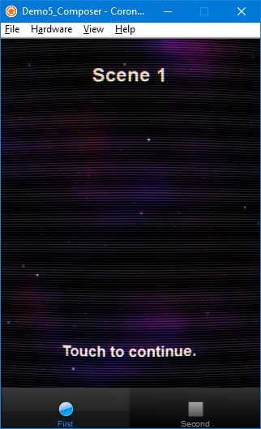
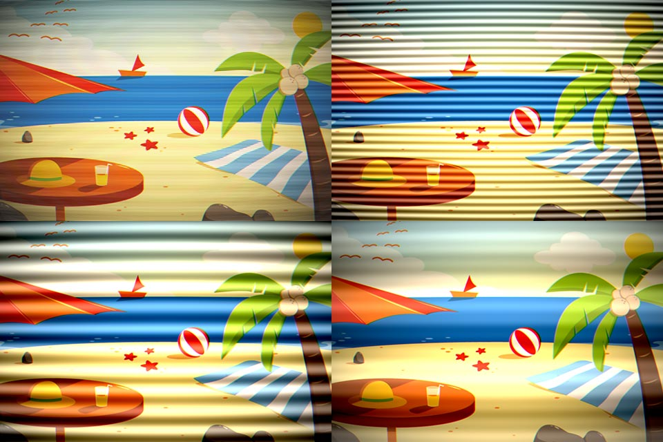
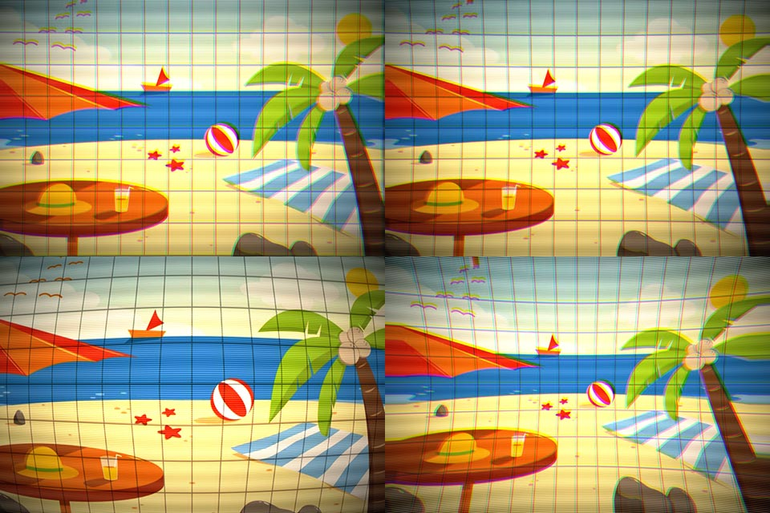
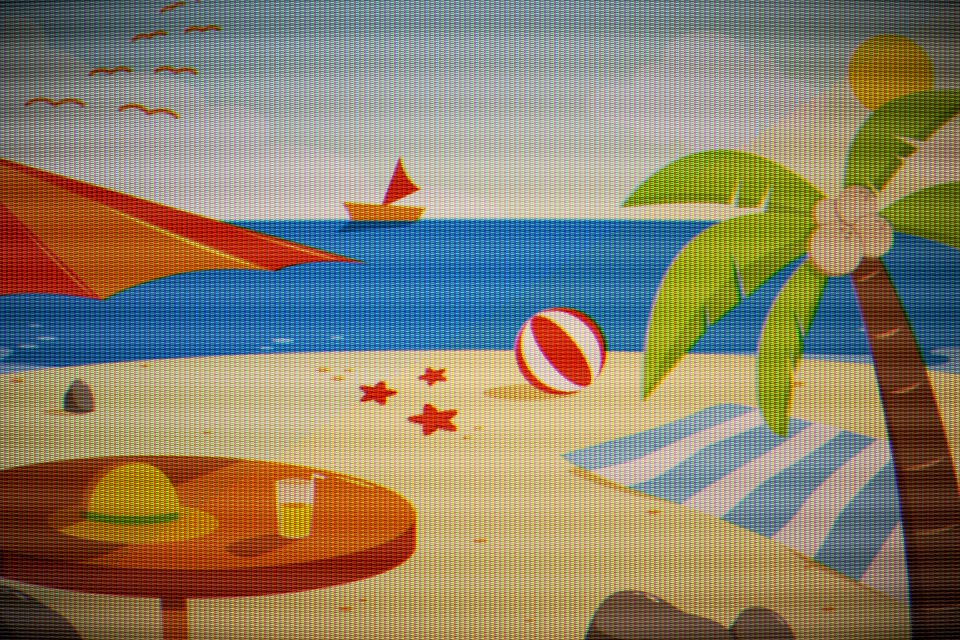

TVShader
Introduction
"TVShader" is a shader for Corona SDK that implements old-school style CRT effects.
It is intended for use when a full-screen "retro" effect is desired.

There are multiple aspects to the effect, including pincushion bulge, contrast and vignetting, color fringe separation (beam misalignment), scanlines, interference, tint, and flicker.
It is available from the Corona Marketplace
Quick Start
Enabling the Effect
Copy the TVShader.lua module into your project folder. (You may also copy it into any desired subdirectory of your project folder - you'd just need to account for that path in the sample code below.)
Require the TVShader module within your code where it will be used.
local TVShader = require("TVShader")
Create two display groups - one to hold the original contents of your display, and one to hold the output from the effect.
local contentGroup = display.newGroup()
local effectGroup = display.newGroup()
Create an instance of the shader, passing it references to the two groups:
local tvshader = TVShader({
contentGroup = contentGroup,
effectGroup = effectGroup
})
That's basically it.
The effect will now be active, but only a bit of interference lines will be visible on the otherwise blank screen.
Giving the Effect Something To Process
In order to actually notice the effect it would help to have some actual content to receive the effect. Any display objects added to the contentGroup will be processed by the effect.
For these purposes, a simple square will do...
local rect = display.newRect( contentGroup, 240, 160, 200, 200 )
rect:setFillColor(0.8)

Disabling the Effect
Turning the effect off is accomplished by destroying the instance.
tvshader:destroy()
API Reference
TVShader(params)
Creates an instance of the TVShader. Once created, an instance of the shader is immediately active.
This function takes a single argument, params, a table that accepts the following parameters:
| Name | Type | Req/Opt | Description |
|---|---|---|---|
| contentGroup | Display Group | Required | A reference to a display group that contains the source content to be processed by the effect. |
| effectGroup | Display Group | Required | A reference to a display group that will contain the output of the effect. The effectGroup should be empty. |
| staticContent | Boolean | Optional | A boolean indicating if the contents of the contentGroup are static (true) or animated (false, default). If the contents are static, then setting this value to true may improve overall performance. |
Example: (dynamic/animated content)
local tvshader = TVShader({
contentGroup = myContentGroup,
effectGroup = myEffectGroup,
})
Example: (static content)
local tvshader = TVShader({
contentGroup = myContentGroup,
effectGroup = myEffectGroup,
staticContent = true
})
Notes:
The contentGroup should be properly "layered" (ie, inserted into an appropriate parent group) in the display heirarchy prior to being assigned to the effect.
The contentGroup will be removed from its current parent group to prevent rendering of the un-effect-ed content.
The contents of the contentGroup may be altered after having been assigned to the shader. You may insert new display objects into the contentGroup, or remove existing objects. Any objects in the contentGroup will receive the effect.
However, if you create an instance with staticContent=true, then later add elements to the contentGroup (thus it is non-static), you must manually invalidate (see below) the effect in order to see those changes.
Note that the contentGroup itself should not be altered after having been assigned to the shader. For instance, you should not attempt to insert the contentGroup into some other parent group while it is in use by the shader.
instance:invalidate()
Manually refreshes the offscreen texture to reflect the current contents of the contentGroup.
This function takes no arguments.
Example:
tvshader:invalidate()
Typically only needed if the instance was created with staticContent=true, yet some later change does occur to the contentGroup that you wish to be reflected in the effect.
If the instance was created with staticContent=false (the default) then any changes to the contents of the contentGroup will be automatically reflected in the effect, thus this method will not be needed.
instance:destroy()
Destroys an instance of the TVShader. Once destroyed, an instance of the shader is immediately deactivated. The contentGroup is returned to it's original parent.
This function takes no arguments.
Example: (typical)
tvshader:destroy()
This function returns a single value - a reference to the original contentGroup. This value is typically not needed as long as the original display heirarchy exists as it did at the time the shader was created.
However, if the display heirarchy has changed such that the original parent of the contentGroup is no longer a suitable location to restore the contentGroup to, you may use the return value to insert the contentGroup into some other parent group.
Example: (using the return value)
scene.view:insert( tvshader:destroy() )
Limitations / Caveats
Performance Considerations
This effect is achieved by rendering the contentGroup to an offscreem texture, then applying that texture to a rectangle in the outputGroup.
This results in non-trivial performance implications.
GPU texture memory will be allocated for the offscreen texture into which the contentGroup is rendered.
GPU load will increase due to the effective double-rendering of the contentGroup. This will be more pronounced when the contents of the contentGroup are dynamic (ie, staticContent=false was passed, or defaulted, during instance creation).
You should performance test this effect on target devices.
Display Quality Considerations
Correction: The information below was written before the initial release of TVShader, and does not conform to the code as written. (rather, it conforms to an unreleased internal version)
As written, TVShader runs at native device resolution, so 'quality' as described below should not be a concern. (texture memory usage, as above, does still remain a concern)
As a trade-off to the above performance considerations, texture memory is limited to content resolutions.
This may cause a degredation in display quality if you are running on a high-resolution / high-density device with significantly lower content dimensions.
This is partially mitigated by the fact that this effect is intended to simulate a poor-quality display device. That is, you may actually
find this behavior beneficial.
User Interface Elements
This is a visual-only effect -- user interface elements requiring touch events should not be part of the content group. Touch events will not propogate through the effect output to the individual children of the group, including user interface elements.
This is typically not a practical limitation, as you probably won't want user interface elements effected (sic). User interface elements would behave unusually even if they were able to receive touch events while subject to the effect, due to the pincushion displacement of the effect - the actual touch bounds of such user interface elements would not coincide with their pincushioned display.
However, it is possible, with a bit of clever coding, to create two sets of user interface elements - one visible and effected, one invisible and not effected -- if you are determined to have effected user interface elements, and can tolerate the slight visual misrepresentation of their pincushioned location. It will be up to you to keep the visual element in sync with the invisible and touch-able element.
Another approach that can work is to manually "trap" and "redispatch" touch events. The general idea is to create a single invisible full-screen rectangle to accept all touch/tap events, then manually bounds-check the elements of the offscreen contentGroup and redispatch those events to the individual elements. Sample code is available from github as TVShader_TouchSupport.
Demos
The distribution file includes several demos, ranging from very-simple to more-complex usage.
BeachBallDemo is illustrated above in the Introduction section.
Demo0_FromDocs is illusated above in the Quick Start section.
Demo1_Simplest presents simple static content usage.
Demo2_SimplestToggled builds on Demo1_Simplest, and toggles the effect on/off via a timer.
Demo3_Fishies borrows from Corona's "Fishies" sample to illustrate dynamic content, and how to go about "patching" an existing project to use the effect. (some extraneous details from the original Fishies sample are excluded, specifically orientation support)
Demo4_Clock borrows from Corona's "Clock" sample to illustrate dynamic content AND non-effected UI elements.
Demo5_Composer borrows from Corona's "Composer" sample to illustrate multiple instances of the effect, as well as proper timing for their creation/destruction when used with Composer.
All demos were last tested against Daily Build 3310.

The following demos were added 8/1/2018:
Demo6_Parameterize1 illustrates how to define parameters to the effect that can be adjusted at runtime to customize its appearance. Specifically, this demo alters the scanline and interference line portions of the effect, randomly setting them to new values every second. This demo uses a customized version of the shader.

Demo7_Parameterize2 illustrates how to define parameters to the effect that can be adjusted at runtime to customize its appearance. Specifically, this demo alters the pincusion, beam alignment and flicker portions of the effect, randomly setting them to new values every second. This demo uses a customized version of the shader.

Demo8_AddGrill illustrates how to add an "aperture grill" -type portion to the effect. This demo uses a customized version of the shader.

Source Code
The distribution file includes full source code. It's only around 200 lines of commented code -- you should expect about a ten minute read (depending on your background) to obtain a reasonable understanding of its inner workings.
Source code is provided mainly for those wishing to alter the shader kernel internals. There are far too many potential variables to pass them as run-time parameters to the shader, for practical purposes anway, so the shader's kernel is "hard-coded". For example, you may wish to disable the pincushion effect, or increase the intensity of the flicker effect, or alter the color tint, et cetera - all of which are clearly indicated by comments.
If you wish, you may even alter the kernel to such an extent as to create an entirely new class of shader.
Just keep in mind the Market's EULA regarding redistribution of any such modifications, other than as incorporated into your own applications.
Source code is also provided in lieu of warranty. If you discover a bug or other flaw in the code, please feel free to advise me and I'll make best efforts to rectify it. But in the mean time, you yourself have the ability to do so as well. I myself hate waiting for resolutions of closed-source bugs, so I don't wish to perpetuate that problem.